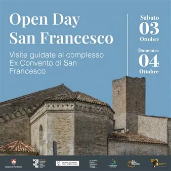

da sab 3 ott a dom 4 ott
Open Days San Francesco
Per un intero fine settimana, cittadini e visitatori avranno l’opportunità di varcarne le porte e scoprire, accompagnati dalle guide turistiche di Pordenone, un luogo che nei secoli ha cambiato volto e funzione, conservando però le tracce delle tante vite che lo hanno…
 Indicazioni
Indicazioni
- Costi e prenotazioni
- Costo non indicato · Prenotazione non indicata
- Programma
- Programma da verificare. Apri la fonte ufficiale per orari e possibili aggiornamenti.
- In caso di maltempo
- Nessuna indicazione specifica pubblicata.
- Note
- Acquisito automaticamente dalla fonte.
L’EVENTO
Descrizione completa
Un fine settimana di visite guidate gratuite tra affreschi, chiostri, storie sorprendenti e tracce di una città che cambia. Il 3 e 4 ottobre l’ex Convento di San Francesco sarà protagonista degli “Open Days San Francesco”. Per un intero fine settimana, cittadini e visitatori avranno l’opportunità di varcarne le porte e scoprire, accompagnati dalle guide turistiche di Pordenone, un luogo che nei secoli ha cambiato volto e funzione, conservando però le tracce delle tante vite che lo hanno attraversato. Nascono così gli Open Days San Francesco, iniziativa promossa in occasione della festa del patrono d’Italia e nell’ambito delle celebrazioni per gli 800 anni dalla morte di San Francesco d’Assisi. L’iniziativa ha ricevuto il patrocinio del Comitato nazionale per l’ottavo centenario della morte del santo. La visita comincia dalla storia del complesso e dalle sue origini, quando il terreno su cui sarebbe sorto il convento si trovava ancora fuori dalle mura cittadine. Il percorso conduce poi all’antico ingresso di via San Francesco, dove è possibile ammirare un affresco, e prosegue all’interno della chiesa. Qui gli affreschi, appartenenti a epoche diverse, raccontano visivamente le trasformazioni subite dall’edificio nel corso dei secoli. Un luogo sacro diventato, nel tempo, anche spazio della vita quotidiana e culturale di Pordenone: una trasformazione che rende ancora più interessante attraversarne gli ambienti. Date e orari:
sabato 3 ottobre dalle 10.00 alle 12.30 e dalle 15.00 alle 18.00
domenica 4 ottobre dalle 10.00 alle 12.30
La partecipazione è gratuita e non è necessaria la prenotazione. Le visite partiranno ogni mezz’ora e saranno condotte da guide turistiche professioniste. L’accoglienza sarà sul lato della chiesa, di fronte al ristorante Fratelli Martin.
Per informazioni: visiteguidatepn@gmail.com
IL PROGRAMMA
Programma e orari
Appuntamenti raccolti dalle fonti elencate. Dove manca un orario, non è ancora disponibile in questa scheda.
Programma pubblicato
- Dal 2026-10-03 al 2026-10-04
INFORMAZIONI UTILI
Prima di partire
- Controllare la fonte prima di partire.
ORGANIZZAZIONE